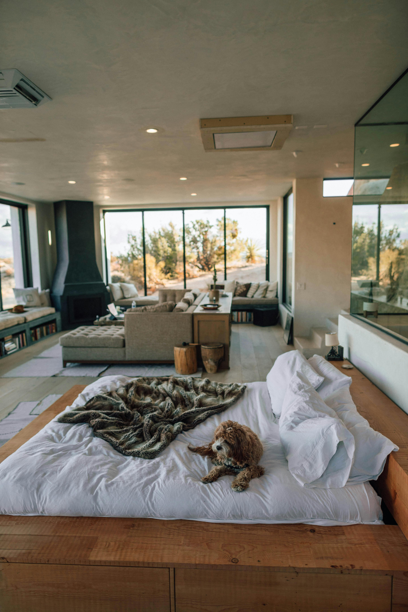

Litigation
At Milo & Maverick, their philosophy is "Every Case Matters." They believe they are honored to have earned your trust and they strive to get you a positive result. Now, that doesn't mean you will always win your case, but it means that they will step up to the plate and go to bat for you in court -- or mediation -- when applicable.
Their attorneys pride themselves on being advocates for the LGBTQ community and minorities in making sure that the laws get applied fairly and their clients are clear about their rights. They are adaptable in their strategies for each case, each opposing counsel, each judge, and each client. For Milo & Maverick, no client is the same and no case is mundane or unimportant.
Mediation
Often times, real estate cases are not fought in court, but rather in mediation. In mediation, Milo & Maverick strive to achieve productive communication and produce collaborative solutions. Working with a mediator allows clients the opportunity to negotiate their position in the hopes of getting a resolution that is equitable to both parties.
Sometimes, however, mediation can result in a stalemate, leaving litigation as an option for resolution. In this case, you can count on Milo & Maverick to stand up for your position vigorously and with dignity and respect for both your position and the judicial process.
Our Results
